Start here
What the mod is, and the model underneath it
Philosophy
Why breeding is a game of skill, why determinism is the load-bearing wall, and which abstractions were chosen on purpose.
read before making a design callThe genetics model
Alleles as objects, the genotype code string, dominance patterns, and the per-allele epigenome.
common/genetics/Breeding & pedigree
Segregation, epigenetic inheritance, horse records, the ancestry database and the family tree.
source of truthThe horse’s body
Speed, health, jump and size resolved from the genotype; the disorders a horse carries, and the foals that do not make it.
common/trait/Breeds
Forty-nine real-world breeds as constrained founder rolls, biome-weighted wild herds, and the cross / mixed label algebra.
common/breed/Gameplay
The layer on top of the genetics — care, items, breeding aids and the world
Horse care
Gated healing, the bond ladder and its four behaviour tiers, and how a herd forms — all on one shared slow tick.
bond · herds · healingBreeding carrots & the gene database
Carrots that bias the gamete a parent contributes, the research papers that unlock them, and the progressive gene database behind both.
influencing inheritanceItems & recipes
The roster and the house rules, with a page for each item. Start here if you are not sure what a thing is for.
every recipeHay portals & the horse dimension
Light a hay-bale frame with a golden carrot and walk a private corridor of 2,000 pens, each one a rolled genotype with its genome on the sign.
the showroomHorse designer
The custom horse spawn egg, in a browser: every registered gene over a horse walking a
grass field. Runs common/ compiled to WebAssembly, so the coat is
the game’s own — byte for byte.
Items
One page each — what it is, how you get one, and what it does
Horse hair
Shear a horse for it. Nearly everything else is made from it, or from something made from it.
the base materialBreeding carrots
Four carrots fed to a parent before breeding. They change what it passes on, not what it is.
stabilizer · magnifier · splicesSplice carrots
Add a gene to a foal — one you picked, one at random, or one from a themed slice of the pool.
known · unknown · 5 themedResearch papers
Learn a gene so you can breed for it on purpose. Found in chests, written by hand, or traded.
unlocks a carrot lineSeed jars
Store a stallion’s genetics in a bottle and breed a mare with him later, from anywhere.
breeding at a distanceWhistles
Every tamed horse you own within range comes to you at once. Three tiers, 16 to 64 blocks.
area recallTransfer papers
How a horse changes hands — and a signed one is drawn as the horse itself, so a shelf of them reads as a stable.
the deedSpawn eggs
Build a horse gene by gene, roll a foundation horse of any breed, or keep an exact horse in an item.
custom · breed · presetStall signs
Bind a sign to a horse and hang it on a wall to claim the room behind as its stall.
nothing uses stalls yetHorseman’s Table
The only block the mod adds. Put one near an unemployed villager and you get a horseman.
a job siteTickets
Four tiers that craft correctly and do nothing at all yet.
inertThe coat engine
How a genotype becomes 16,384 pixels
Three-phase pipeline
Natural genes restrict pigment, the gradient resolves it to colour, magical genes add signed RGB on top.
CoatTextureComposerBody space & regions
The projection engine that lets a coat rule be a smooth function of position and still come out seamless.
HorseSkinGeometryThe paint order
Every gene that paints a coat, stacked in the order it is applied — the last thing painted at the top. What covers what, as one long picture.
priority, top to bottomEye colour & heterochromia
Three biological routes to an iris, ranked; where green and hazel come from; and how a horse ends up with one blue eye or a blue wedge in a brown one.
EyeColor · EyeSpread · EyePatchTexture resolution
What the sheet size actually is, what would break at half it or sixty-four times it, and the plan to paint on whatever white horse the player’s own resource pack ships.
not built — analysisFor modders
Adding a gene of your own
Making a gene
The whole job in one place: from a picture of a marking to a rule that draws it, every key in
the file, every mask and op, the effects vocabulary, the Java escape hatch, and
what to re-bake afterwards.
Class abstractions
Every type a gene author touches, what it abstracts, and the signatures that matter.
referenceTrait & effect architecture
The wider behaviour system effects is a first slice of: selectors, auras,
pools and goals.
Gene creator
Build a gene in the browser, watch it on a 3D horse over any base coat, and export the JSON the game loads — no code.
toolBreed designer
Pick a base coat, narrow the pool, band the numbers, and export the JSON the game
loads out of config/horsegenetics/breeds/. It validates with the mod’s
own parser and previews a herd with the mod’s own founder roll.
LUT lab
Drop a colour gradient in and see the horses the real pipeline bakes against it — the three base coats, every dilution locus, and a tobiano to check the whites.
toolProject
What is unproven, and what is coming
Architecture & the build
The three-module split that keeps a 1.12.2 backport cheap, the package layout, how a genome reaches a pixel, and what it takes to build and run.
start here to edit codeNeoForge 26.1.2 API notes
What the port actually required — renamed classes, the retained-mode GUI, and the events you must not touch block state from.
each entry cost a crashCoding notes
The working notebook — how to find things out here, how to tell a real check from a decorative one, and the traps that live between two pages that are each correct.
technique, not referenceReleases
What shipped in each tagged version, newest first — the player-facing record, without the reasoning.
newest firstTo be verified
The rolling runClient checklist — open issues, and what is built but not yet seen in-game.
Known gaps & lessons
What is broken, half-built, or resting on an unchecked assumption — plus the failure modes this project keeps rediscovering.
near-termMod compatibility
What this mod touches on the vanilla horse, why it uses attachments rather than a custom entity, and which kinds of mod it can and cannot live beside.
the renderer is the real conflictRoadmap & backlog
Everything still to do, ordered by priority — the defects, the decisions, the gene wishlist and the gameplay layer that is not built yet.
nothing here is builtSession log
The dated record of what each session built and why — the reasoning behind decisions a later session would otherwise re-litigate.
newest firstNatural coat genes
The pigment every other gene then works on: whether the horse can make black at all, where that black is allowed to go, and the countershading over the top of it.
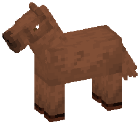
Extension
Can this horse make black pigment at all? ee gives chestnut.
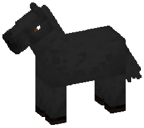
Agouti
Bay: black restricted to the points. Seal brown is the top of its distribution, not a separate gene.
A / a · dominant · 50/50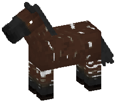
Brindle
Irregular white streaks that do not match from one side of the horse to the other — and the mod’s only X-linked gene. A stallion carries one copy and can never be a carrier, so it runs visibly down one side of a pedigree.
Brn / n · X-linked · 2% of stallions, 0.04% of mares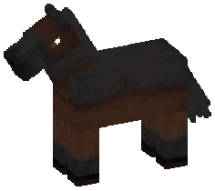
Sooty
The dark countershading that lies over a horse's topline, crest, shoulder and croup and makes it look darker than its base colour says - a muddy palomino, a smutty buckskin, a bay people keep calling black. It works by declining to remove pigment the rest of the coat was about to lose, so it shows most on the colours with the most to keep and does nothing at all on a plain black. A dosage of two variant alleles; no confirmed real-world inheritance exists.
S2 / S1 / s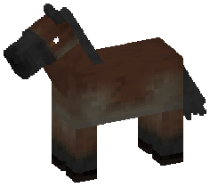
Pangare (mealy)
Mealy: the pale muzzle, eye rings, belly, flanks and inner legs of an Exmoor pony or a Fjord. It takes red pigment off the soft parts of the horse, which is why it shows brightest on a chestnut, spares a bay's black points entirely, and is invisible on a black. A dosage of two variant alleles; near-fixed in some pony and draft breeds and no confirmed mutation anywhere.
Pa2 / Pa1 / paNatural dilution genes
Genes that lighten what is already there. Each takes red, or black, or both down by some amount - which is why the same dilution reads completely differently on a chestnut and on a black.
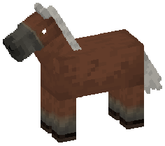
Silver dapple
Dilutes black only — chocolate body, near-flaxen mane and tail. A chestnut carrying it looks untouched.
Z / z · 1 in 60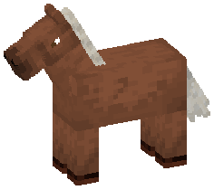
Flaxen
The pale mane and tail of a chestnut horse - from a few gold strands to a near-white fall of hair - as a dosage of two variant alleles rather than the simple recessive folklore models it as, because no flaxen mutation has ever been identified. It touches the long hair and nothing else, and it is invisible on any horse that makes black hair, which carries and transmits it regardless.
Fl2 / Fl1 / f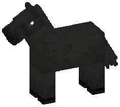
Mushroom
The mirror of silver: dilutes red only, and only with two copies, walking a chestnut to a flat sepia.
Mu / mu · recessive · 1 in 34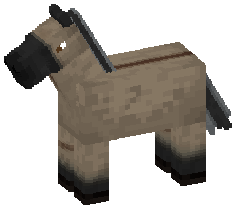
Dun
Body dilution plus primitive markings. The middle allele draws the dorsal stripe with no dilution, so a horse can carry primitive marks and not be a dun.
D / d1 / d2 · 3 outcomes · D 1 in 24, d1 1 in 10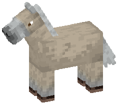
MATP — cream and pearl
One locus, three alleles, six combinations: palomino and buckskin, classic pearl, and the cremello a cream and a pearl together produce.
Cr / prl / N · 4 outcomes · 1 in 30, 1 in 22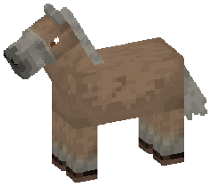
Champagne
Gold, classic and amber champagne from a single rule that reads the current pigment.
Ch / c · dominant · 1 in 40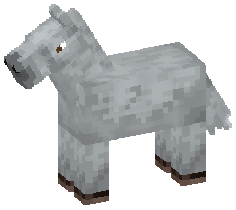
Grey
Dapple grey on adults only, at a per-horse stage from dark steel to nearly white.
G / g · dominant · 1 in 16Natural white genes
Genes that take the coat away entirely in places. Only alleles at the same locus compete for a slot, which is why a horse can be tobiano and splashed and framed at once but never dominant white and sabino.
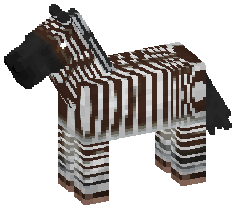
Zebra striping
A real zebra’s pattern, made the way a zebra makes it: the dark bands are the horse’s own colour and the gaps have the pigment taken out of them. So a striped black is black and white and a striped chestnut is red and white.
Zeb / n · codominant · 1 in 60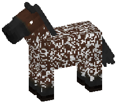
Roan
White hairs mixed evenly through the body coat, fading out by the head; the points and lower legs stay solid.
Rn / rn · 1 in 30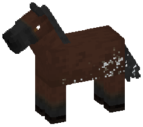
Rabicano
White ticking that starts at the tail dock and the flank and works forward - a frosted, banded coon tail, a scatter of white hairs over the rear barrel and belly, and broken vertical rib bars on the strongest ones. The allele is dominant but how much shows is a per-horse roll that can come out at almost nothing, so a horse recorded as solid can throw a heavily ticked foal. Not classic roan: the tail tells them apart.
Rb / rb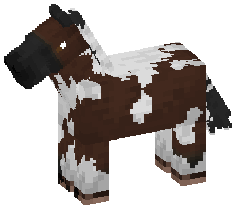
Tobiano
Big smooth-edged white patches that cross the topline and run down the legs; the head stays coloured.
To / to · 1 in 50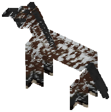
Leopard complex (appaloosa)
Three loci — LP plus the modifiers PATN1 and PATN2 — giving leopard, fewspot, spotted blanket and snowcap, with striped hooves and a white-rimmed eye. The one gene that reads other loci to decide what it paints.
EDNRB — frame overo
Flank white that never crosses the topline — and, from two carriers, the all-white lethal foal.
O / N · 3 outcomes · 1 in 55KIT — white spotting
Eight alleles at one locus: sabino, the W series and dominant white, which is why a horse can be one of them and never two.
W22 / W13 / W10 / W5 / W23 / SB1 / W20 / N · 8 outcomes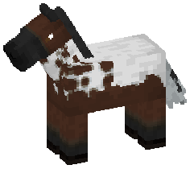
Manchado
A rare Argentine pattern: broad clean white over the back, crest and croup with smooth rounded islands of the base colour left inside it, a mostly white tail, and a dark head, belly and lower legs. It takes two copies and no wild horse has them, so the only way to see one is to breed two carriers. Its own locus - it belongs to none of the mapped white-pattern genes, and its real cause is unknown.
ma / Ma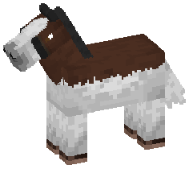
MITF — splash white
Dipped in white from below, with a sharply bounded edge. One of the two splash loci.
SW3 / SW1 / SW5 / N · 4 outcomes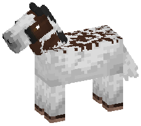
PAX3 — splash white
The other splash locus, and the one most horses carry: nine wild horses in ten have a copy. Carry one at each locus and the horse is markedly whiter than either alone.
SW2 / SW4 / N · 3 outcomesNatural health genes
The loci you cannot see: speed, size, jump, and the disorders. Almost every one is recessive and absent from its own founder table as a homozygote - a wild horse can carry a disorder but never have one.
MSTN — myostatin
The sprint / stamina trade: each C copy adds speed and costs two hearts of health.
PDK4
A plain speed gene — each A copy adds a little movement speed and nothing else.
CKM
The weakest and rarest of the three speed loci; each T copy adds a little speed.
RYR2
Each J copy adds jump strength — the first gene in the mod to move a horse’s jump.
LCORL / NCAPG
A height gene: taller, with a little more speed and jump, per L copy.
HMGA2 — pony
Smaller, slower and lower-jumping per p copy — but two hearts hardier for it.
ACAN
Dwarfism with five alleles; affected means no working copy is left. One pairing is lethal at birth, the rest are surviving dwarfs.
D1 / D2 / D3 / D4 / N · 0.4% per variantB4GALT7
Friesian dwarfism — reduced size and health, but the one disorder a horse lives with.
d / N · 4% carriersPLOD1
Fragile foal syndrome — a recessive lethal at birth.
ffs / N · 2.6% carriersRAPGEF5 — EFIH
The rarest and most severe of the foal lethals — recessive, lethal at birth.
efih / N · 1.4% carriersST14
Naked foal syndrome — a recessive lethal at birth (the bald coat itself is not drawn).
nfs / N · 1.8% carriersSHOX
Skeletal atavism — a recessive lethal at birth, inherited like an ordinary autosomal gene.
sa / N · 2.0% carriersMET
Lethal at conception: when two carriers would make an affected foal, the pairing simply yields none.
met / N · 3.0% carriersSCN4A (HYPP)
SCN4A (HYPP), periodic paralysis - the first locus that is BOTH a survivable disorder and a lethal. One copy affects the horse (there is no silent carrier), two kill the foal. Wild horses can be born with one copy, because a dominant that never appeared in a founder could never appear at all.
H / NGYS1 (PSSM1)
GYS1 (PSSM1), tying-up - a dominant disorder, so every copy shows and there is no carrier. Neither combination is lethal, which makes it the mildest and by far the commonest disorder a player will actually meet.
P / NPPIB (HERDA)
PPIB (HERDA), fragile skin - a recessive disorder the horse lives with rather than dies of: it splits where a saddle sits and never heals cleanly. The commonest survivable recessive here, because the real thing hides inside exactly the working lines a breeder would choose.
herda / NPRKDC (SCID)
PRKDC (SCID), severe combined immunodeficiency - a recessive lethal. The foal is born with no immune system and does not survive.
scid / NMYO5A (lavender foal)
MYO5A, lavender foal syndrome - a recessive lethal at birth. The real disorder comes with a diluted silvery coat, which is deliberately not drawn: the foal dies in seconds and phase 1 can only remove pigment.
lfs / NTOE1 (cerebellar abiotrophy)
TOE1, cerebellar abiotrophy - a recessive disorder of balance. The horse survives but has no idea where its feet are, which makes it the heaviest jump penalty in the mod. Progressive in reality; a flat cost here, because there is no age model.
ca / NCVM (cervical malformation)
CVM, cervical vertebral malformation - a recessive lethal at birth. Unlike every other natural gene here it has no confirmed causal variant; treating it as one locus is the mod's simplification, not a claim about horse genetics.
cvm / NGBE1 (GBED)
GBE1 (GBED), glycogen branching enzyme deficiency - a recessive lethal at birth, and the largest heart reduction in the mod. The foal cannot store or release sugar.
gbed / NMegaesophagus
Megaesophagus, a slack gullet that will not move milk - a recessive lethal at birth. Like CVM it is a breed condition with no confirmed causal variant, simplified to one locus.
meg / NOther natural genes
The naturals that are neither pigment nor pattern nor disorder - what the horse will eat, and what colour its eyes are.
Sex
Mares are X/X, stallions X/Y. First gene in the order, and the only one that paints nothing — so a foal’s sex is inherited, not rolled.
Diet
What the horse will eat. Twelve narrow diets - raw meat, fish, wheat, cake, potions, lava, one metal, one gem and the rest - each of which needs two identical copies to show, against a wild type that eats ordinary horse feed. A narrow diet refuses almost everything, and what it does accept feeds it far better: a single gold bar takes a metal-eater to full health. No breed carries any of it.
13 allelesTiger eye
A bright amber iris in a horse whose coat is entirely ordinary — the first gene that changes only the eyes. Essentially confined to the Puerto Rican Paso Fino.
TE1 / TE2 / N · recessive · eyes onlyMagical coat genes
Where the magic starts. These are the hand-written genes that put colour on the horse - Java classes rather than gene files, because each does something no colour op can: swap the whole gradient chart, colour the hair on its own axis, draw an emblem over the finished texture, take the front third of the animal away. The data-driven markings are in the seven families below this one, sorted by what shape they are made of.
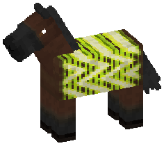
Bargello
Sharp zigzag ribbons run the length of the ribcage in stacked colours, over a fine screen of straight horizontal lines.
P / C / n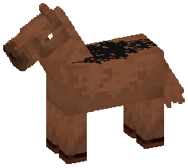
Blackwork
One black ornament lies along the horse's back - thick rounded strokes that curl, hook and taper, all of it connected into a single mass and mirrored exactly either side of the spine.
Bk / Bc / n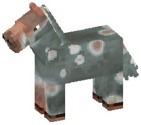
Coastline
A rust landmass lies across a sage sea with a pale grey coastline drawn all the way round it, and small rust islands, each with its own shore, scattered off it.
Cl / Cm / n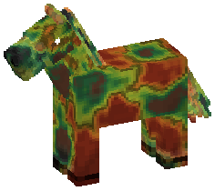
Contour
The coat reads as a contour map - lobed masses ringed by nested bands that step from cream through pink and mint to near-black, with a drawn line following one level all the way round.
Ct / Cx / n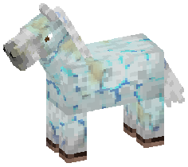
Crazework
The coat crazes into tiled plates, each one dark with a blue centre and a cyan spark inside that, separated by grey channels that pool pale gold where three of them meet. Toward the forehand the tiling breaks up and the plates drift apart into islands.
Cw / Cq / nCutie mark
A recessive emblem of 1–3 item icons stamped on both flanks, over everything. Which items, how many, and the layout are all epigenetic and breed true.
Cutmrk / n · recessive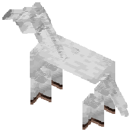
Dhampir
A magical recessive whose carrier is not silent: one copy gives red eyes with glowing whites and nothing else, which is what makes the locus worth hunting. Two copies give a white, red-eyed animal that burns in daylight and runs for shade or water, with three times the health, half again the speed and twice the jump - and which cannot be fed by any means. It heals only by biting something living.
Dhmp / n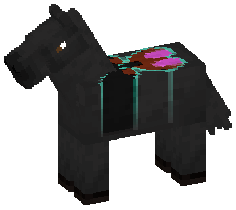
Dorsal Wing
A butterfly lies along the horse's back with its wings spread either side of the spine - dark, edged in teal, with rust squiggles across the wings and hot pink cells inside them. Both halves are identical.
Wb / Wc / n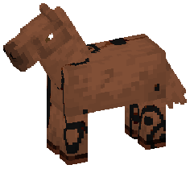
Dripwork
Heavy ink rings with solid pupils are scattered over a pale ground, each one trailing a drip straight down, with loose dots thrown between them.
Dw / Dx / n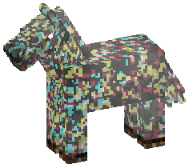
Dustfall
Fine coloured dust settles over the whole horse in three independent scatters - raspberry, yellow and teal - each drifting into its own thicker and thinner patches, over a faint taupe haze where it lies heaviest.
Du / Dc / n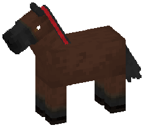
Healer
Mends whoever stands beside it, and carries a red stripe down its mane so you can tell.
Hlr / n · recessive · 9%Hood
A colour laid solid over the head that thins out along the neck and is gone by the shoulder - how far it reaches, and what colour it is, both run in the family.
Hd / n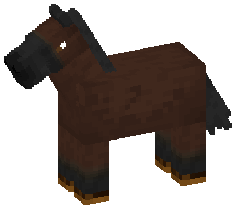
Light
Gold hooves, mane or eyes that glow in the dark, and a horse that lights a stable. Three alleles, none dominant to the others.
Lthf / Ltmn / Lteye / n · codominant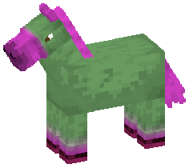
LUT
Swaps the whole colour gradient for an unnatural one. Two matching variant copies turn a horse blue and pink; one copy is a silent carrier.
n / Blupnk · homozygous-onlyMagic sectoral heterochromia
Two different colour alleles and the horse shows both, a wedge of each in each iris. Two of the same show nothing — the only gene here you cannot breed toward by doubling up.
6 colours / n · 15 expressing pairs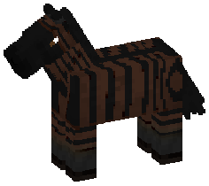
Magic zebra
A zebra’s own stripe map at −200% per channel — black over any coat at all, including one with no pigment left to remove.
Mzeb / n · dominant · 1 in 100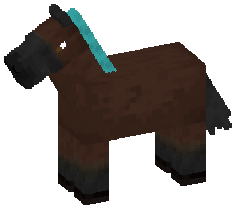
Mane colour
Any colour there is, solid or banded — or both at once, in two colours, because each allele copy carries its own hue.
Mnsld / Mnstrp / n · 4 outcomes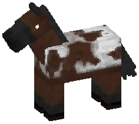
Nacre Saddle
A milky marbled saddle over the back, folded into pale lobes with a thin shifting film picked out along every rim.
W / B / C / n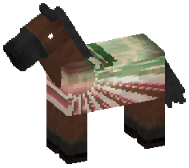
Nymphaline
The barrel carries the membrane of a butterfly wing - rose cells netted by dark green veins, each vein edged in cream, all of them radiating from a spar along the topline.
Wn / Wf / n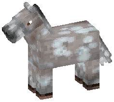
Overcast
Banks of grey cloud drift across the horse - rounded blobs packed shoulder to shoulder, each shaded darker at its middle, with thin bright channels of sky between them. A third allele carries the same four-step cloud in the dark end of the scale - a thunderhead rather than an overcast.
Cu / Ck / Cc / n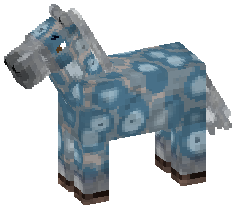
Ringwork
A dark network runs over the coat, pooling where its lines meet, and inside every space it encloses sit two or three concentric rings around a small dark core - a contour map of something nobody drew.
Rw / Rc / n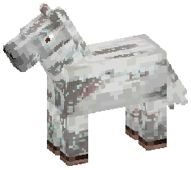
Serpentine
The coat runs in long streaky bands of taupe, sage and blue-grey with dark seams between them, and bright green ore is scattered through it in chips and dust.
Sp / So / n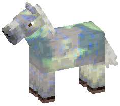
Shallows
Ripples spread across the coat in rings of short blue flecks over a pale ground, with irregular lime splotches lying over them and a black depth flooding down from the topline in lobed fingers.
Sh / Sc / n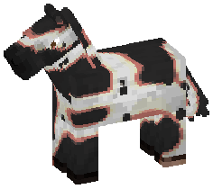
Squiggle
Broad squiggling lanes wander the length of the horse, forking and pinching out, each one white down its middle and running out through yellow to a pink rim, with small holes of bare coat punched through them.
Sq / Sc / n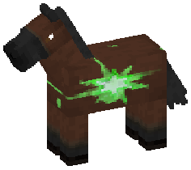
Starburst
A hard-edged six-pointed star sits on each flank, ringed twice and thrown out over a longer eight-point burst, with shards and flecks scattered clear of it.
W / B / C / n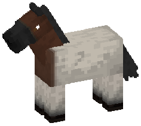
Suit
A band right round the base of the neck, with everything behind it going pale and the head, crest and lower legs keeping the coat — painted near the bottom of the order, so almost anything else covers it.
Sut / Suc / n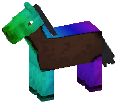
Synort
The whole body under a running colour gradient, with a tobiano-shaped patch of the horse's own coat left in it, outlined in black - and white flecks through an otherwise untouched mane.
Syn / n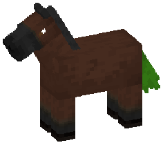
Tail colour
The same locus one gene over, so a horse can be one colour at one end and another at the other.
Tlsld / Tlstrp / n · 4 outcomes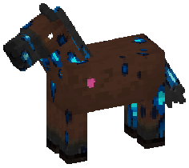
Teardrop
A scatter of brilliant blue teardrops hangs point-down across the coat, each one rimmed in navy with a pale cyan spark in its head, and a single pink teardrop sits on the shoulder - one on each side, the same place on every horse that carries it.
Td / Tc / n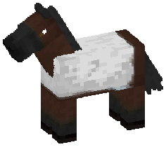
Wing Margin
The flank carries a butterfly's wing - a pale field crossed by fine veins running back toward the stifle, edged along the underline with a row of scallops and dark lunules.
W / B / C / nMagical yield genes
Genes about what you get out of the horse rather than what it looks like - what fills a bucket, how often, how much meat it leaves, what it drops, and what happens to the ground it died on. None of them paints anything, and most of them cannot be seen on a living animal at all, which is what makes them worth a gene database.
Egg layer
A magical recessive that paints nothing: two copies of the SAME allele and the horse drops an item on the ground every few hours with nothing required from you. One copy shows nothing, and two different alleles show nothing. How often is drawn per allele copy.
9 allelesMagic item drop
Dia / Egg / Swd / nMagic meat
Mty / nMagic milk volume
Mlk / nMagic on death
Lav / Wat / Xpl / nMilk
A bucket gets milk, water or lava. Both magical alleles are invisible in one copy, and lethal together.
Watr / Lava / n · recessivePotion milk
A magical incomplete dominant that paints nothing: milk a tamed grown mare with an EMPTY BOTTLE rather than a bucket and get a potion. One copy is weak, two matching copies are strong, and two DIFFERENT copies give one bottle carrying both effects at the weak grade.
11 allelesMagical behaviour genes
Genes that change what the horse <i>does</i> - how mobs feel about it, what it becomes after dark, what it eats and what it turns into. The night loci are the reason this family exists: a horse that stands in the corner watching you is not a coat pattern and never belonged beside one.
Base alarm
A magical DOMINANT that paints nothing: one copy is enough, and the horse whinnies when something hostile comes within about sixteen blocks of IT - not of your base, which is not a thing this mod has. Where you stable it is the configuration.
Alm / nBird boned
A magical recessive that paints nothing: two copies and neither the horse nor its rider takes any falling damage, from any height. It removes fall damage, not falling.
Brd / nCleansing light
A magical recessive that paints nothing: two copies and undead within a radius drawn per allele copy take steady damage. Anything the aura kills was killed by the HORSE, so you get no experience and no player-only drops - it is defence, not farming.
Cln / nDryad
A magical recessive that paints nothing: about once a day the horse plants a sapling near where it stands. It plants; it does not fertilise. How often is drawn per allele copy and inherited with it.
Dry / nEcholocate
A magical recessive that paints nothing: two copies and the horse cries like a bat now and then, outlining everything alive nearby through walls and darkness. It shows you the skeleton and the lost cow without distinguishing between them.
Ech / nEnder echo
A magical recessive that paints nothing: two copies and the horse blinks about eight blocks away when something damages it, carrying its rider. Against skeletons it is close to immunity; against a skeleton across a ravine it is a trip you did not plan.
End / nFireproof
A magical recessive that paints nothing: two copies and neither the horse nor its rider takes fire damage, and the horse swims THROUGH lava rather than over it. Wild horses carry it and never show it, so a fireproof horse is always one somebody bred.
Frp / nFood preference
A magical DOMINANT that paints nothing: one copy and the horse has one favourite food, which gives a short buff and far more bond than it should. It OVERRIDES the diet locus - a meat-eater that inexplicably loves carrots will eat them, and that is the point.
13 allelesGladiator
A magical recessive that paints nothing: two copies and the horse attacks hostile mobs that come within reach - but only while nobody is riding it, and it holds its ground rather than chasing. It makes the horse willing; magic fighter is what makes it dangerous.
Gld / nGuardian
A magical recessive that paints nothing: two copies, tamed, and the horse attacks whatever damaged its OWNER within about sixteen blocks. It never picks the fight and it keeps working while you ride, which is what separates it from a gladiator.
Grd / nHoly ward
A magical recessive that paints nothing: two copies and hostile mobs cannot SPAWN within a radius drawn per allele copy, at least eight blocks and never more than sixteen. A camp that walks. Wild horses carry it and never show it.
Hly / nHot blooded
A magical recessive that paints nothing: two copies and snow and ice within a couple of blocks melt away, leaving a thawed circle wherever the horse stands. On a frozen lake it melts the ice it is standing on and is then in the water.
Hot / nHydrophobic
A magical recessive that paints nothing, and the odd one out: it RESTORES vanilla behaviour rather than adding to it. Two copies and the horse throws its rider in deep water and heads for shore, losing the swimming assist every other tamed horse here gets.
Hyd / nIntimidating
A magical recessive that paints nothing: two copies and everything that is not a horse - your cows as readily as any monster - is pushed out of a radius drawn per allele copy. It cannot be pastured with your animals, which is the cost and is deliberate.
Itm / nLeader of the pack
A magical recessive that paints nothing: two copies of the SAME allele and every creature of one kind within sixteen blocks trails the horse around. One allele per non-hostile mob, and wild horses only ever carry - so a matched pair is always something somebody bred.
38 allelesLYCAN — the werewolf locus
Two copies of the same allele and the horse is a real wolf, cat or chicken from dusk to dawn — and a horse again in the morning, with the same name and the same pedigree.
37 shapes / n · matched pairs onlyMagic mob aura
Wrd / Bai / nMagic night temper
9 allelesMagic night watch
6 allelesMeowing
A magical recessive that paints nothing: two copies and the horse meows occasionally, and creepers keep outside a radius drawn per allele copy. Creepers are the mob that costs you a horse, which is what makes the joke worth breeding.
Mew / nMusic enjoyer
A magical recessive that paints nothing: two copies and the horse's bond rises while a jukebox plays nearby, with hearts. It answers to the same daily bond ceiling as every other source, so it is a pleasant way to spend a day rather than a shortcut past one.
Msc / nOcean-born
A magical recessive that paints nothing: two copies and neither the horse nor its rider can drown. It says nothing about how fast the horse swims or how long it lasts under - those are other loci, on purpose.
Ocn / nSpawner
A magical recessive that paints nothing: two copies of the SAME allele and once a day the horse tops the local population of one mob UP TO two - doing nothing at all if they are still there. One allele per mob INCLUDING the monsters, and never expressed in the wild.
68 allelesSpontaneous breeding
A magical recessive that paints nothing and grants no effect at all: two copies, AND another horse nearby with two copies, and the pair breed on their own with no golden carrots. Wild horses carry it and never show it, so the first pair in a world is one somebody bred.
Spb / nVerdant
Mycelium, moss or grass creeping out from the hooves. Every variant needs two of itself.
mush / moss / grass / nMagical emission genes
Genes that put something in the air around the horse rather than on it - the particle loci, whose colour, body site and density are all written on the allele copy and inherited with it.
Molten hooves
A magical DOMINANT that paints nothing - the only dominant one among the trails: one Mlt copy is enough, and the horse leaves burning hoofprints that fade out behind it as it moves. Nothing catches fire. Two copies behave exactly the same but draw the trail from both copies' colours at once. The colour is drawn per allele copy and inherited with it, so a line breeds true to its own fire.
Mlt / nParticle
Flames, souls, snow, hearts — a horse that trails something as it moves. Forty alleles at one locus, so it shows at most two, and one copy of the wild type silences the lot.
40 variants / n · recessive · 87 outcomesRainbow dust
Coloured dust off all four hooves, fading from one colour into the next and working its way round the whole rainbow.
Rbw / n · recessive · 0.25%Singer
A magical recessive that paints nothing: two copies of the SAME allele and the horse plays the OPENING of a music disc now and then - not the whole thing and never the middle, because a Minecraft sound cannot be started partway through. Duration and volume are per allele copy.
16 allelesMagical body-stat genes
Loci that move what a horse's body can do and paint nothing at all - the magical mirror of the performance genes, with far wider ranges and no real-world claim behind them. Four of them (speed, health, jump and size) resolve into the horse's stats and are the ones a breed pins from its stat bands; the rest reach the game as effects instead, because swimming and fighting mean nothing without a running game around them.
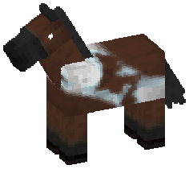
Agatebound
A ribbon of banded colour runs diagonally across the barrel like a slice through agate, every band outlined in near-black, with a bright seam along its middle.
P / C / n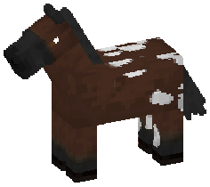
Bracketed
Overlapping shelf lobes crowd the haunch, each one a pale rim around a darker body, stacked the way bracket fungus climbs a trunk.
W / B / C / n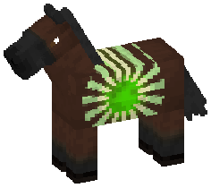
Coronal
A dark, ragged disc sits high on each flank with a ring of long tapering spikes thrown out around it, brightest at the tips.
W / B / C / nEyesight locus
A magical recessive that paints nothing: Cav/Cav is faster in the dark and slower in light, Day/Day the reverse, and one of each cancels. It reads the actual LIGHT LEVEL rather than the clock, so a cave at noon counts and your own torches slow a caveborn horse down.
Cav / Day / nGeode
Straight-sided crystal shards grow up out of the hooves and the lower barrel, faceted, lit along their upward faces and glinting at the tips.
P / C / nMaelstrom
A whirlpool of tapering arms winds into a tight spiral on each flank, with a scatter of pale flecks caught in the sweep.
W / B / C / nMagic body size
Most horses carry a copy, worth about a tenth either way. Two copies add — and no wild horse is born with two.
Big / Small / n · codominant · 80%Magic fighter
Gld / Wmp / nMagic health
The same, for hearts. Not a disorder — the config “off” switch leaves it alone.
Hardy / Frail / n · codominant · 80%Magic jump
The same, for jump strength. One of the four body-stat genes most wild horses carry all of.
Springy / Leaden / n · codominant · 80%Magic speed
Magic body size for how fast a horse runs. Multiplies the natural speed loci; most horses carry a copy.
Swift / Sluggish / n · codominant · 80%Magic swim speed
Otr / Stne / nMagic water breathing
Gil / Shal / nSunspiral
A tight spiral sits centred on each flank with three rings of short dashes thrown out around it, gathered into five points like a rock-carved sun.
W / B / C / nWeather sensitive (jump)
A magical codominant that paints nothing: the same idea as the weather speed locus and a completely separate gene, moving jump instead. Inheriting one tells you nothing about the other, which is the whole reason there are two.
7 allelesWeather sensitive (speed)
A magical codominant that paints nothing: a positive and a negative allele for rain, storms and snowfall, each moving the horse's speed by a percentage drawn per allele copy while its own weather holds. Unlinked to the jump locus. You cannot check it on demand - you wait for the sky.
7 allelesWitchfire
Tongues of cold fire climb the underline and the legs, forking and pinching out before they reach the topline, with one slow curl low on the barrel.
P / C / nMagic: ground and strong white
Genes that replace the base coat rather than mark it - a white horse with the colour breaking through, a coat confined to a handful of regions, a field split down the middle.
Beetle Pearl
A hard black barrel scattered with pearls, a pale cap over the poll and a dark fork down the face - a pearl-spotted beetle rather than a spotted horse.
Bpw / Bpc / nBlack Holes
Solid hard-edged patches with scalloped margins, dropped anywhere at all - face, limbs, belly, over the base of the mane - each with a satellite dot or two beside it.
Bhl / nBurn
Pure black, and pure black regardless of what the coat is - up the legs and over the muzzle on one allele, through the mane and tail on the other, and both at once when a horse carries one of each.
Bm / Bt / nCarapace Sheen
The coat gleams like a beetle's shell - glassy and deep where the body turns toward the light, paling underneath, with a bright ridge down the spine and a few pale blazes on each flank.
Csh / nCleave
The horse split about half and half, along a boundary made of interlocking spears - long narrow triangles driven into each field from the other, and never a curve anywhere.
Clv / Clc / Wav / Wac / nCoccinella Marking
A beetle-black coat with red paisley over the barrel and a cream patch at each shoulder - a seven-spot ladybird read onto a horse.
Ccr / Ccv / nCracked Porcelain
A glaze laid over the whole horse and then crazed - the coat underneath shows through only as the hairline cracks between the plates.
Cpw / Cpc / nDragon Shroud
Soft-edged plumage laid over the whole horse and piped in steel grey, breaking into streamers down the mane and tail - with the coat underneath showing through as scattered windows.
Drsw / Drsc / nFracture
Overo read backwards - a white horse with the coat colour breaking through it in hard-edged, unpredictable blocks and streaks.
Fdf / Fdc / nGalaxy
A black field over most of the horse with the coat left showing in a few lobed patches, and the black full of stars - hard points and long curved streaks in white and a cool accent or two.
Gxy / nImperial
A white cape starting at the withers and working forward up the neck - reaching the poll at full coverage - with slivers of coat left showing between its branches.
Sbi / Sbc / nIridescent Jewel Beetle Coat
A coat that runs through the spectrum from one flank to the other, pitted with dark punctures in warm haloes - the shell of a jewel beetle.
Ijw / Ijm / nKoi
A hard-edged patchwork over the whole horse, the way a koi carp is marked - one colour against another with nothing blended between them, and the mane and tail striped to match.
Koi / Kob / Kow / nLaciano
Tobiano and appaloosa in one marking - white coming down from the back rather than up from the belly, spotting over it, and always the banded raccoon tail that gives it away.
Lac / Lcc / nMarble Tobiano
Tobiano gone streaky and angular - hair-thin veins on a minimal horse, broad blocky zones on a heavily marked one, and nothing at all unless it is homozygous.
Tmr / Tmc / nMoth Mantle
A pale mantle over the barrel crossed by a wing net, with a banded tail, a pair of spots at its tip, and a mark on each cheek - a tiger moth at rest.
Mmw / Mmc / nOpal Wing-Vein Marking
The barrel as an insect wing - a membrane running dark at the belly to bright along the back, fanned with fine veins and lit between them.
Owv / Owm / nPanda
A strong white that keeps the coat only where a giant panda is dark - the muzzle, the ears, patches round the eyes, the shoulders and the hindquarters - with freckles of it scattered along the topline.
Pan / Pnc / nQular
White over eight or nine tenths of the horse, left open in big irregular panels of coat - a giraffe read backwards, with the mane untouched.
Qul / Quc / nSnow Cloud
A white horse with its colour left only where the snow did not settle - clustered high on the croup, round the ankles, and across the face in front of the ears.
Snw / Snc / nSuntouched
A data-driven gene shipped as a JSON file: an emissive gold mane and tail, a gold-dust aura, and enough light to walk by.
Sntch / n · gene fileTribal Ward
A painted ward - a pale ground with coiled swirls at hip and shoulder, chevrons down the back, bands round the neck and rings round the legs, and the coat left bare at the throat and chest.
Twd / Twc / nValentine Appaloosa
The whole coat pushed into pinks and reds - black to fuchsia, red to pink - and then blanketed with white spots, mane and tail carried along with it.
Vln / nWaterborn
The other shipped gene file: neon-blue streaks through the mane and tail, a blue trail at the hooves, and walking on water.
Wtbn / n · gene fileWinged
Curved bands sweeping back from the withers along the ribs with ovoid spots between them, and one diagonal stripe across the shoulder - laid straight on the coat with one copy, and inside a dark saddle with two.
Wng / nMagic: fields and regions
Genes that divide the horse into areas - a blanket off the topline, a band round the neck, the underside against the back, a wash with no edge anywhere.
Accretion
One long boundary running the length of the horse, dividing it into a pale field and a coloured one - the allele decides whether it is the underside or the topline that goes pale.
Ab / At / Ac / nAgate
The coat splits into cracked, jewel-toned cells, each one softening to a pale rim and deepening at its heart - agate split open in the light.
Agt / Agc / nBanded Socks
Stacked bands up all four legs, like a set of rings pulled on - the height of the band and its colour are the horse's own.
Bsk / nCoral Bloom
The coat ruffles into overlapping coral lobes, each rimmed in bright orange and shading from deep sea-blue to a pale crown, flecked all over with gold.
Crb / nCosmic
A blanket anchored on the topline and hanging down the sides, filled with a starfield - and, on a well-marked horse, a planet or two with a ring round it.
Cs / nDorsal Shield
A plate laid over the back from withers to croup, studded with haloed marks - armour rather than a blanket.
Dsh / Dsc / nDutch
A hard-edged white band right round the body at the shoulder, widest under the chest and narrowing over the withers, with white stockings and a white muzzle to match.
Dut / Dtc / nEmitola
The whole underside taken in black, its upper edge broken into flames, and bright speckling worked all through the flame work - with the forelock the same colour.
Emi / nFlametouched
Fire on the horse - stylised flames licking up the legs and face with one copy, or a smooth ember gradient over the topline, face, hair and hooves with two. Never both on one horse.
Ffm / nGill Bloom
A fungal-touched marking: one or two fan-shaped patches on the barrel, each rimmed in dull gold and hollowed to a deep maroon interior spoked like the underside of a mushroom cap.
Gbl / nGoth
A soft-edged hood over the forehead, poll, ears and crest - darker than the coat with one copy, greyed out to near-white with two.
Gth / nHued Pangare
Pangare in a colour instead of in cream: a soft field up the belly and the underside of the neck with one copy, and half the horse with two.
Hpa / nIris Bloom Diamonds
Dark royal-blue diamonds unfold across the barrel like a fan of iris petals, each rimmed in ink, dappled white, and lit at the middle by radiating amber veins.
Ibd / nIuari
Concentrated patches a shade off the coat, each one ringed by a scatter of bright speckles that thins as it moves away.
Iua / nKite Bloom
Angular, jewel-toned panels tile the coat like a stained-glass leaf, each one salted with pale flecks and seamed with the coat beneath.
Kbw / Kbc / nLadybug Saddle
A pair of wing panels over the barrel split by a black spine, veined in black, with a checkered collar where they meet the withers.
Lbs / Lbc / nMasked
A hard-edged dark mask over the top of the head and down the crest, broken by pointed light streaks along the neck, with the far half of the tail dark to match.
Msk / nMoonwing
A pearl-white wing sweeps back across each side of the barrel, dusted with a faint shimmer of blue, violet and pink and bound at the edge by a thick band of gold. Rare foals carry it reversed - the wing itself coloured, the gold unchanged.
Mnw / Mnc / nMorpho Wing
A patch of iridescent light gathers low on the haunch like a wing folded against the flank, cut through with dark bars that rake toward the tail.
Mow / Moc / nNebula Points
Black points - head, muzzle, ears, mane and tail - with a fan of light running up the crest and raking across the barrel. The dominant form glows in the dark; the recessive one is the same pattern in plain pigment.
Nbg / Nbp / nNightbloom Shroud
A marking said to fall on horses touched by fungal fae magic in old-growth forest: the crest and skull glow deep abyssal blue, and ribbons of gold-to-violet gill striping fan down the neck and barrel before fading out over the legs.
Nbs / nNimbus
A cloud of colour lying over the trunk with no edge anywhere, curdled into stronger and weaker cells so the coat reads through it in places.
Nim / nOpal Crackle
A coat shot through with fine dark seams, each one catching light in its own colour - the fire you would find cracked out of a boulder opal.
Ocr / Ocp / nOpaline
A network of raised glassy veins divides the coat into a mosaic of small irregular cells - pale-on-pale in the common form, and in the rare one blazing blue and violet, each cell rimmed near-black and starred with tiny bubbles.
Opw / Opd / nOpossum
Grey confined to the front of the horse - forehead, face, neck and the front of the shoulder - with roaned edges that never cut sharply, and a pink muzzle where it reaches that far.
Opo / Opc / nOrchid Frost
Cold, soft-edged blotches settle over the coat, bleaching its black and plum toward candy pink wherever they land - and finding nothing to bite into on a coat already that pale.
Frs / nOscar
Black laid over the whole horse and then flaked away in big wavy upright stripes, so the coat underneath shows through the gaps like the scales of a fish.
Osc / nPapillon
A butterfly's wing laid over the neck, drawn from a real species, with the mane and tail carrying the wing's brightest and darkest colours down their length.
Si / Gr / Sp / nPatina
Copper going green - verdigris marbling worked into exactly the places a seal bay keeps its light patches, with mottling round the eyes and muzzle.
Pat / nPetaled
The coat breaks into overlapping petals, each rimmed in dark rose and then in black, veined across a pale blush field like a flower caught mid-bloom.
Ptl / nQuarter
The trunk cut into quadrants by two transverse planes and the midline, with one of them going pale - or two, on the other allele.
Qp / Qd / Qc / nQuazars
Two to four long pale beams lying nose-to-tail across the shoulder, hip and thigh, brightest along their middle and fading out with no edge at all.
Qzr / Qzc / nShark
A single fin-shaped pale field standing on the withers, leaning forward, with a tapering band running on up the crest to the poll.
Shk / Shc / nSky Shadow
The whole coat pushed toward mid-grey, with a further wash of light up the belly and flank - and the mane, tail, lower legs and muzzle left at full strength.
Sky / nStardust
Colour leaving the hair from two places at once - the base of the forelock and the tip of the tail - and creeping along the spine, with star-shaped dapples crowding the edge of wherever it has reached.
Str / Stt / nTidefoam Sash
A sinuous sash of deep tidewater teal sweeps diagonally across the barrel, its surface laced with a fine white net of foam cells and the occasional larger bubble.
Tfs / nTidemark
The belly and lower barrel filled to an arched waterline, with the line picked out in a second colour and a row of dots riding along it.
Tdm / Tdc / nWar Mask
Most of the face taken by a flat armoured mask - near-black on a light coat, and light grey on a dark one, so it reads on every horse.
WrM / nXuke
The head and all four legs taken over completely by dense coloured ticking - a roan rather than a spotting - with black hooves and often a little striping over the hindquarter.
Xuk / nMagic: spots and rings
Genes made of countable marks: spots, rosettes, annuli, crescents, chains of disks, and haloes with something dark inside them.
Angler
Strings of faintly glowing lights strung horizontally along the body, each light a pale core inside a deeper rim, like the lures of a deep-water fish.
Ang / nAurorae
Luminescent spots scattered over the whole horse, in one hue the line carries, with the mane and tail fading into the same light toward their tips.
Aur / nConcentric Eyespots
Butterfly-wing eyespots - nested rings around a pale glinting core - scatter down the neck and all four legs.
Cew / Cec / nCrescents
One to four broad open arcs, the largest centred on the barrel, each thinning to nothing at both of its ends and keeping the coat colour inside its curve.
Crs / Crc / nDuskwing Bands
Two curved bands sweeping round the barrel one inside the other, like the bands on a moth's wing.
Dwb / Dwc / nEhretia
Haloed spots over the barrel and neck, a dorsal stripe, dark socks, and a fine speckled bloom laid over the lot.
Ehr / Ehc / nFawn
A single flowing line of soft round spots running neck to rump, a darkened topline above it, and a pale underside to the tail.
Fwn / Fwc / nFish Scales
The barrel raises into overlapping fish scales, each one rimmed in a warm colour this line of horses carries, with a darker line traced along its outer edge.
Scl / nGlow
Small glowing speckles crowded along the topline, with the hooves lit to match. Every lit part of the horse shares one colour.
Gl / nHarlequin Shield
A saw-toothed shield across the flank, filled with lozenges that each have a smaller lozenge inside them - three tones, all hard-edged.
Hqs / Hqc / nIntegration
A spot field spreading outward from wherever the coat is already dark - merging into solid patches close in, thinning to isolated marks a foot or two out, and gone beyond that.
Int / Inc / nIridescent Rosette
Dark rosettes speckle the coat, each rimmed in bands of colour that shift like the shell of a jewel beetle.
Irw / Irc / nLantern
A soft line of bioluminescence running the length of the topline from poll to croup, broken here and there where the light fails to carry.
La / nLasertae
Two to five large ellipses on the scapula, barrel and hip, each a bright diffuse halo closing around a core that stays darker than the coat around it.
Lst / Lsc / nMoth Eyes
Fine black vein-work threads the coat like an insect's wing membrane, broken by dark, gold-ringed eyespots along the flank - but only where the coat beneath is already black or grey.
Mte / nOcular
Eyes down the horse's neck - open ones, with a white, an iris in the line's own colour and a pupil. They are drawn off a single lattice, so every one of them is a real eye and not a smear that happens to be round.
Ocu / nPainted Lady Wingmark
A butterfly wing laid over the barrel - a soft-edged field crossed by veins and rimmed in dark.
Plw / Plc / nPavonem
Peacock eyes - upright ovals filled paler than the coat, each with a bright spot low in it, and always a scatter of ordinary spots around them.
Pv / Pvc / nPicasso Marking
Flat dots in one colour and wandering squiggles in another, with the squiggles keeping clear of the dots - a horse marked like a painting rather than like a horse.
Pic / nPolymoon
A chain of pale disks running from the throatlatch back along the shoulder and onto the barrel, largest in the middle of its run and tapering at both ends.
Pmn / Pmc / nRex
Open circles in a bright colour, at least three of them, anywhere on the horse - drawn over whatever else it is wearing, with the hooves in the same colour.
Rx / nRosette
Leopard rosettes following the curve of the body - a dark ring around a centre that keeps the coat colour - sparse in one copy and blanketing the horse in two.
Rs / nScarab Dapple
Iridescent dapples over the topline, neck and face - each one a dark rim round a mid tone round a pale core, like the shell of a beetle. The legs, the croup and a patch at each shoulder stay clear of them.
Scb / Scc / nShieldback
A scalloped collar across the withers and a fanning column of ringed eyespots down the topline - a shield bug's back, on the horse's own colour.
Shb / Shc / nWormholes
Small pale rings whose centres keep the coat underneath, gathered into two or three clusters over the shoulder, barrel and hip.
Wmh / Wmc / nMagic: speckle and dust
Genes made of stipple - fields of fine points that drift into drifts and thin out rather than ending, and the markings built on top of them.
Duskfall Speckle
Fine speckling that is thickest along the topline - the back, the crest of the neck and the poll - and has thinned to nothing before it reaches the legs or the muzzle.
Dfs / Dfe / nDust
Fine stipple with no boundary anywhere - up from the pasterns, along the belly, a cap on the muzzle, and a band beside the mane.
Dst / Dsc / nPeafowl
Speckling that sweeps across the body in a current rather than scattering, in two or three colours, with a plume standing in the mane and another in the tail.
Pwl / nSpeckling
Fine coloured speckles scattered over the coat and hooves to match - one colour with a single copy, two with a pair. Half a dozen other markings are described in terms of it.
Spk / nStars
A scatter of small pale points over the upper half of the horse, dense along the topline and thinning to nothing at the belly and below the knee.
Sta / Stc / nMagic: lines and strokes
Genes made of strokes: scratches, contour lines, riblines, brindle nets, filigree, and the two that are stripes but insist they are not.
Bracket
Two clusters of near-black stripes with nothing between them - one down the neck, one fanning over the croup - plus a dark muzzle, a dark hoof and a band above it.
Brk / nBrindlelace
A dark reticulated net rather than solid patching - short dashes and closed loops with the coat showing through between them, densest at the neck and shoulder and closing to solid below the knee.
Bnl / nCircuit
Black strokes down the caudal neck and shoulder with a closed spiral at the withers, the widest of them carrying a saturated blue core, and a blue band at every fetlock.
Cir / nDiamond Scutes
A lattice of hollow diamonds crossing the back, running up the crest of the neck, down the tail and round the forelegs - a dragon's wing-scutes rather than a horse's coat.
Dsw / Dsc / nElytra Veins
A net of veins over the barrel and neck, each one bright down its middle - the cell pattern of a beetle wing-case rather than a marking.
Elw / Elc / nEmberveins
Fine seams trace the coat like cracked stone about to give way - molten orange in the glowing form, a quiet rust vein-work in the other - with drifting embers and one wandering thread of light caught along the flank.
Emb / Emr / nFiligree
White metalwork over the muscle masses - a closed spiral on each of them, long arcs following the body's contours, and broken tracks of short dashes filling the space between.
Flg / Flc / nGudial
Warning colours off a poison frog - bold bands round the neck and legs, a dark masked head worked over in stripes, and spotting along the topline.
Gud / nInk Scroll
Scrollwork inked over the horse - a band of curls round the neck, a ringed medallion at the shoulder and the hip with lines running off them, and a smaller scroll on each cheek.
Isw / Isc / nInternal Flow
Thin contour lines in nested groups, tracking the muscles underneath - the back of the shoulder, the sweep of the ribcage, the front of the hindquarter.
Ifl / Ifc / nKintsugi
The horse repaired like broken pottery - cracks running across it filled with a metallic colour, one on a leg with a single copy and a network of them with two.
Kts / nLace
A thread-fine net of white veining over the horse - lace, or a crazed glaze, rather than the broad blotches of Marble Tobiano.
Lac / Lah / nLacevein
Fine branching lace etches across the coat, rooted in two deep jewel-toned blooms at the withers and the poll.
Lvn / nMoth Wings
A moth's wing read onto the barrel - chevron bands each with a dark edge, a paired eye-spot on the flank, and a scalloped hem along the belly.
Mwa / Mwc / nOpaline Zebra
A full set of stripes - round the barrel, across the face, and down the spine - on a ground that is opal rather than white.
Opz / Opc / nPanark
Thick stripes thrown across the horse at every angle, each outlined in a bright colour and speckled inside it - and the ordinary speckling still going on underneath.
Pnk / nQhada
Broad ribbons of colour draped along the topline with speckling filling the gaps between them, and hair-thin stripes of the same colours through the mane and tail.
Qha / nRiblines
Thin white strokes following the skeleton - down the neck, along the rib arcs, over the scapula and hip - and set as rings around the legs.
Rib / Rbc / nScratches
Sets of three to five near-parallel streaks raked across the hip, the back of the barrel and the side of the neck, each one widest in the middle and tapering to a point at both ends.
Scr / Scc / nStained Glass
Black leading in straight lines across the horse, and a quarter-strength wash of colour in each pane between them. Which colours is the allele's business rather than the horse's - this is the one locus where the palette is inherited as an allele and not written on the copy.
Sgv / Sgm / nStellar
Angular glyphs of two to four crossing strokes, scattered over the shoulder, withers and front of the barrel, each with a satellite dot or two beside it.
Ste / Sec / nVortex
A hard-edged lens over the neck and shoulder filled with undulating bands in a fixed four-colour order - cyan, cream, magenta and near-black - carried a little way into the mane.
Vtx / nWebbed
A polygonal net of veins over the barrel and neck - the venation of a tiger-moth wing, and nothing else.
Web / Wec / nWyrmwood Sigils
Curling black scrollwork wrapping the neck, barrel, face and legs, threaded with a luminous ichor that tints the mane, drips down the hip, trails off the tail and caps the hooves.
Wys / Wyd / nZebra's Coat
Narrow transverse striping over the neck and shoulder only, standing upright on the neck and leaning back as it crosses the withers - and stopping dead at the back of the scapula.
Zbc / Zbk / nMagic: mane and tail
Genes that touch only the hair - gradients down its length, bands across it, and the spectrum run root to tip.
Auroraband
One continuous ribbon running the length of the upper body in a shallow S, combed into fine lengthwise striations, and shifting hue from cyan at the front to magenta where it curls at the back.
Abd / nCorvid
A white wedge up the face with a black muzzle below it, black cannons over a thin white ring at the coronet, and black hair speckled white throughout.
Cvd / nElement Dusted
Three hues to a horse - one leading and two supporting - climbing the legs from the hoof, running down the far half of the hair, and settling along the topline as dapples.
Ed / nFade
The mane and tail leave the coat colour behind on their way down and end in a colour no horse's hair is, the shade running in the family.
Fd / nFrostfall
Mane, forelock and tail losing their colour from partway down, ending white - and reaching it at different depths strand by strand, so the front is feathered rather than level.
Fro / Frc / nGuppy
The mane cut into hard vertical bands of two to four saturated colours, and the tail streaked lengthways in the same palette. The body is untouched.
Gup / nPrismtail
The hair banded through the spectrum in order from the roots down - yellow, green, cyan, blue, violet, magenta - and back to its own colour before the ends.
Prt / nStriped Mane and Tail
A handful of contrasting bundles running the length of the mane and tail - light strands through dark hair, dark through light - and nothing at all on the body.
Smt / nMagic: colour modifiers
Genes with no shape of their own. Each reads what the horse already is and changes it - which is why they paint last, and why a plain horse shows some of them not at all. The far end of the band is where the few genes that must have the LAST word live: a neon outline over everything, a head blacked out under whatever else was drawn on it.
Bloodstained
Red gathers along the bottom edge of the horse's markings - inside the white rather than around it, and under every red the coat already had. It reads as something that ran down and settled, because that is exactly how the mask is built.
Bst / nExtreme white dominant
A magical gene that paints nothing at all and changes a rule instead: while it is present, a white texel is final. Every marking still runs in the ordinary order and every one of them is discarded wherever the coat is already white, so the horse's natural white markings come out on top of the magic instead of under it. Silent on a horse with no white. One copy is the whole of it.
EWD / nFielded
Grass-like tendrils drawn out of the edges of the horse's white markings - a streak or two on a quiet horse, a windblown field of them on a loud one.
Fld / Flw / nGamma
A chromatic modifier: diffuse fields of one saturated hue on the barrel and flank, each with a glow blooming past its edge - and nothing hard-edged anywhere on it.
Gam / nInvert
The last thing painted: the whole finished coat comes out as its own negative. White goes black, orange goes blue, and everything the horse was carrying goes with it.
Inv / nNacre
The coat breaks into hard-edged plates like a cracked shell, each one paler at its gold seams and richer toward its middle.
Nco / Ncg / nNebula Light
Overlapping zones of magenta, violet, blue and teal across the back half of the horse, with a fine population of points through them and a few larger ones wearing halos.
Neb / nNyxborn
Every white the horse has goes black, and then the whole of the black is scattered with tiny white points - a night sky where the markings used to be.
Nyx / nOil Sheen
The coat looks like a soap film caught in light: a cracked, iridescent web of veins running the length of the horse, pooling over the barrel into a dense, bubble-pitted slick whose colour wanders instead of sweeping.
Osn / nOpalized
The same substrate as Voided taken the other way - every white region comes out as iridescent cells of three to seven hues, pearlescent at the rim and strongest in the middle.
Opl / nRising Sun
Heavy black ribbons roll across a white coat in even waves, each shadowed a little below by grey, and a single red disc sits on either flank.
Rs / Rc / nShadowcreature
Shc / nSpectrum Light
One long field over the barrel and hip through which the hue rotates continuously in spectral order - red to violet, no bands, no repeats.
Spc / nTron
Neon run along every edge of the horse. It paints later than anything else in the mod, so whatever else the horse is wearing, the lines are drawn on top of it.
Trs / Trg / nVoided
Every white the horse would have had comes out black instead - the same markings, the same edges, the opposite pigment.
Vd / nYalia
Blocky straight-sided zones outlined in a bright colour and filled flat with white - architecture rather than marking - with a band round each leg and the hair going white where a zone reaches it.
Yal / Ylc / nCLAUDE.md; player-facing install and
gameplay notes are in README.md. Everything else is here.
Licensed CC BY-NC 4.0.